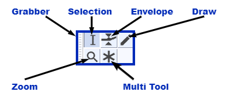

Toolbars Overview
- The Meter toolbars are a special case. You may have one or both of the separate Recording and Playback Meter toolbars visible (both are visible by default). Alternatively you can have only the Combined Meter Toolbar visible (which displays recording and playback levels in a single meter).
- The tooltips for the toolbars and tools (visible when hovering over the toobar or tool) will display the shortcut for that tool/toolbar if one is set.
The Toolbars
The individual toolbars are described briefly below. Click on any toolbar title to go the details page for that toolbar, or on the image to go to details for that button.
Transport Toolbar

- Controls playback and recording and skips to start or end of project when neither playing or recording.
Tools Toolbar
- 
- Chooses various tools for selection, volume adjustment, zooming and time-shifting of audio.
Recording Meter Toolbar

- Displays recording levels and toggles input monitoring when not recording.
Playback Meter Toolbar

- Displays playback levels.
Mixer Toolbar

- Adjusts the recording and playback volumes of the devices currently selected in Device Toolbar.
Edit Toolbar

- Cut, copy, paste, trim audio, silence audio, undo, redo, four zoom tools.
Play-at-Speed Toolbar

- Plays audio at a slower or faster speed than normal, affecting pitch.
Scrub Toolbar

- Starts, stops or switches to Scrub play or Seek play, and hides or displays the Scrub Ruler.
- This toolbar is not shown by default. Select to show the toolbar, which by default docks in the upper dock.
Device Toolbar

- Selects audio host, recording device, number of recording channels and playback device.
Selection Toolbar

- Controls the sample rate of the project, snapping to the selection format and adjusts cursor and region position by keyboard input.
The default position of Selection Toolbar is at the bottom of the main Audacity window, thus it is not visible in the Toolbars image at the top of this page.
- Controls the sample rate of the project, snapping to the selection format and adjusts cursor and region position by keyboard input.
Spectral Selection Toolbar


- Displays and lets you adjust the current spectral (frequency) selection without having to be in Spectrogram view.
- This toolbar is not shown by default. Select to show the toolbar, which by default docks in the lower dock, beside or under Selection Toolbar.
- Choose your preferred format option from the dropdown menu above the boxes: Center frequency and Width
 or Low and High Frequencies .
or Low and High Frequencies .
Customizing Toolbar Layout
| The size and position of toolbars can be customized. See Customizing Toolbar Layout for details. |
Toolbar dock areas
There are two dock areas for toolbars in Audacity. By default, most of the Audacity toolbars are in the upper dock, with only the Selection Toolbar in the lower dock.
Toolbars can be arranged and resized within either of the two docks, or floated free of the docks.
Upper Toolbar dock area

Lower Toolbar dock area (showing Selection Toolbar)
Additionally if you choose to show the Spectral Selection Toolbar from the View Menu (it is not shown by default) then it will also be shown in the Lower Toolbar dock area by default.